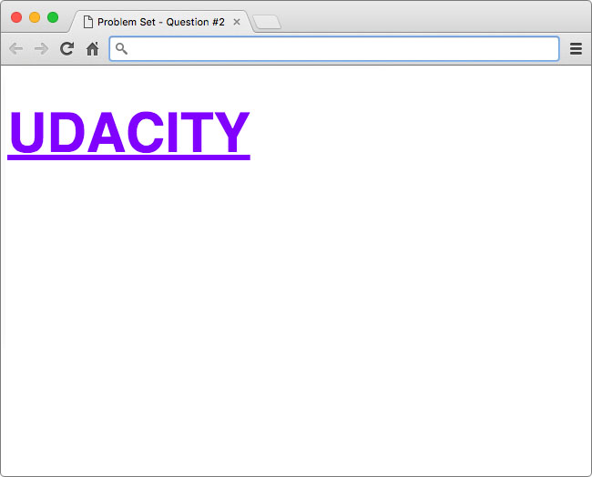

03. Style the Font
Style the Font
Question:
Style the Font
For this quiz, you'll experiment with styling font using the "udacity" text below.
This text looks pretty boring!
Just like the previous quiz, I'll give you the HTML and it will be your job to add the style. You'll need to use properties related to font and text to produce the following result.

Hint: The font color is a shade of purple (#8001ff)
Fonts
When using fonts on the web, you must first consider what fonts are available to your users. Every operating system, be it Windows, OS X, or Linux, comes with a set of pre-installed fonts that you can use for customizing your website. For a complete list of "web-safe" fonts, follow this link.
The way it works is fairly simple. When using the font-family property, you specify the font(s) you want to use in your HTML.
font-family: font1, font2, font3, ...;Then, the browser, starting from left to right, looks at the font(s) you've specified and checks to see if it can render the text using the font(s) you've provided. If it can't use the first font, then the browser moves to the next font, and so-on.
The purpose for specifying multiple fonts is because not all fonts are available on every operating system. So, specifying multiple, similar fonts ensures users have a consistent experience regardless of the operating system they are using.
Arial vs. Helvetica comparison
In the solution, I specified font-family: Helvetica, Arial, sans-serif;. Therefore, the browser first tries to render the font Helvetica. On Macs this works because Helvetica is a standard font packaged with the operating system. However, on Windows and Linux machines, it is possible (not likely) that those operating systems do not have support for the Helvetica font by default, so the browser would then try to use Arial. If Arial doesn't exist, then the browser will use whatever sans-serif font is available.
Custom Fonts
It is also possible to use custom fonts on the web. If you want to go ahead and start experimenting, you can check out Google Fonts to see some open-source web fonts in action! With custom web fonts, it's not as important to specify multiple fonts like seen above; however, it is still smart to specify at least one backup font in case your custom font doesn't load.
How to Complete this Quiz
Edit index.html in the Udacity classroom to replicate the same styling seen in the solution image.
Again, I've helped you out by writing the selector with an empty declaration block to put your changes. You're welcome 😉 .
.udacity-text {
/* add CSS here */
}When you're ready, click "Skip to Quiz" to get started.
Start Quiz:
Solution:
Here's my answer:
.udacity-text {
font-family: Helvetica, Arial, sans-serif;
font-size: 60px;
text-transform: uppercase;
text-decoration: underline;
color: #8001ff;
}The font-family property is used to change the font to Helvetica, Arial, or the default sans-serif font installed on the operating system.
Next, the font-size property is used to increase the size of the font to be larger and the text-transform and text-decoration properties are used to capitalize and underline the text.
Finally, color is used to change the color to the shade of purple you see in the solution image below.
Check out the before and after:
Instructions
Replicate the same styling seen in the Udacity text below.
Hint: The font color is a shade of purple (#8001ff)